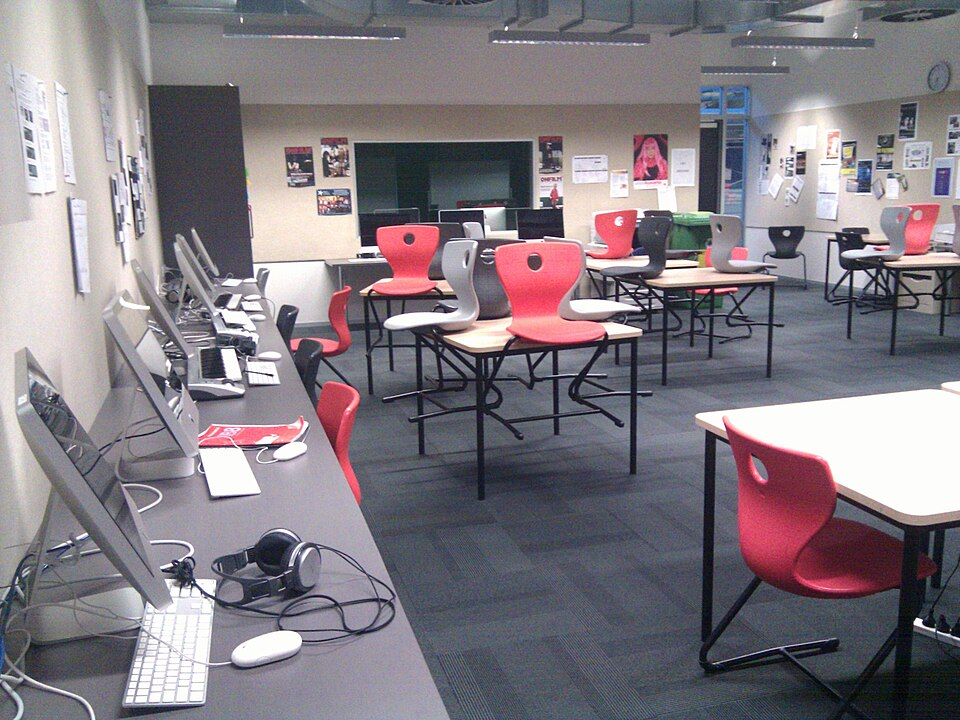

학교 컴퓨터 교실 (이미지) · 사진: Mosborne01 / Wikimedia Commons, CC BY-SA 3.0
국제학교 학습 플랫폼·시간표 읽는 법 — 무엇이 보이고 무엇이 안 보이나
1. 통로가 네 가지로 나뉩니다
학교마다 쓰는 프로그램 이름은 다르지만, 하는 일로 나누면 대개 네 가지입니다. 이름부터 외우려 하지 마시고 어느 칸에 들어가는 것인지부터 잡으세요.
· ① 교육과정·평가 플랫폼 — IB나 케임브리지 같은 교육과정의 단원·평가·기준표·성적표를 담는 곳. IB 학교에서는 ManageBac(매니지백)을 쓰는 곳이 많습니다.
· ② 수업·과제 배포 도구 — 선생님이 그날의 자료와 과제를 올리는 곳. 구글 클래스룸(Google Classroom), 저학년은 시소(Seesaw)를 쓰는 곳이 많습니다.
· ③ 학교 정보 시스템(SIS) — 출결·연락처·학기말 성적표·등록 서류 같은 학교 행정 기록. 스쿨로지(Schoology)·파워스쿨(PowerSchool) 계열이 여기에 해당합니다.
· ④ 학교 소식 — 이메일과 뉴스레터. 의외로 중요한 안내가 여기로만 오는 경우가 많습니다.
🔎 같은 학교가 ①과 ②를 함께 쓰는 경우가 흔합니다. 예를 들어 성적과 기준표는 ManageBac에, 그날의 수업 자료는 구글 클래스룸에 올리는 식입니다. 그래서 "왜 여기엔 없지?" 하는 일이 생깁니다. 어느 과목이 어디에 올라오는지를 학기 초에 한 번만 정리해 두시면 그 뒤가 편합니다.
2. 학부모 화면 — 보이는 것과 보이지 않는 것
학부모 계정은 보통 학생 계정과 다른 화면을 봅니다. 그래서 아이가 보는 것을 부모님이 그대로 보신다고 생각하면 어긋납니다. 대체로 이런 경계가 있습니다.
| 항목 | 학부모 화면에서 대체로 보이는 것 | 대체로 보이지 않는 것 |
|---|---|---|
| 과제 | 제목과 마감일, 제출 여부 | 아이가 실제로 낸 파일의 내용 |
| 점수 | 과제별 점수·등급 | 왜 그 점수인지(선생님이 기준표에 남긴 항목별 표시) |
| 교사 의견 | 학기말 성적표의 서술 | 과제마다 달린 짧은 코멘트(학생 화면에만 있는 경우가 많음) |
| 수업 내용 | 단원 제목, 학습 목표 | 그날 나눠 준 자료·수업 슬라이드 |
| 출결 | 결석·지각 기록 | 수업 중 태도에 대한 기록 |
| 장기 과제 | 최종 마감일 | 중간 단계 일정(등록되지 않는 경우가 많음) |
※ 위 구분은 일반적인 경향입니다. 실제 권한 설정은 학교마다, 학년마다 다릅니다. 우리 학교에서 부모 계정에 무엇이 열려 있는지는 학부모 상담 때 한 번 물어보시면 정확합니다.
이 표에서 오른쪽 칸을 보시면 하나로 정리됩니다. "무엇을 냈는가"는 보이지만 "왜 그 점수인가"는 잘 안 보입니다. 그리고 아이의 성적을 실제로 움직이는 것은 오른쪽 칸입니다. 그래서 왼쪽 칸만 보고 계시면 숫자가 떨어질 때 이유를 모른 채 걱정만 하시게 됩니다.
3. 부모님이 가장 자주 오해하시는 다섯 가지
· "화면이 비었으니 숙제가 없다." — 아닙니다. 초등 학년은 교실에서 말로 안내하는 경우가 흔하고, 장기 과제는 마감일 하나만 올라옵니다. 비어 있는 날일수록 아이에게 직접 물어보셔야 합니다.
· "점수가 떨어졌다." — 학기 초의 숫자는 과제 두세 개만 반영된 중간 계산인 경우가 많습니다. 하나만 못 봐도 크게 흔들립니다. 흐름은 과제가 쌓인 뒤에 보셔야 합니다.
· "마감일 = 제출일." — 국제학교의 마감은 "그 수업 시간에 가져오기"인 경우가 많습니다. A/B day 시간표에서는 마감일이 이틀 뒤처럼 보여도 실제로는 그 전날 밤이 마지막입니다.
· "내 화면 = 아이 화면." — 다릅니다. 선생님 코멘트는 학생 화면에만 있는 경우가 많습니다. 아이 계정으로 같이 한 번 열어 보시는 것이 가장 빠릅니다.
· "알림을 켜 두면 다 온다." — 알림은 대개 과제 등록·점수 입력만 옵니다. 학교의 중요한 안내는 이메일로 오는 경우가 많으니 학교 메일을 스팸함까지 확인해 두세요.
4. 시간표 — 한국과 다른 지점
국제학교 시간표를 처음 받으시면 요일이 아니라 A·B 또는 1~6 같은 번호가 적혀 있어 당황하십니다. 많은 학교가 월~금을 그대로 반복하지 않고 며칠을 한 묶음으로 돌리기 때문입니다.
· A day / B day — 이틀을 번갈아 돌립니다. A day에 듣는 과목과 B day에 듣는 과목이 다릅니다.
· 6일 주기(6-day cycle) — 여섯 번의 등교일을 한 묶음으로 돌립니다. 요일과 어긋나므로 같은 수요일이라도 주마다 과목이 다릅니다.
· 블록 수업 — 한 과목을 길게 묶어 수업합니다. 대신 매일 있지 않습니다.
· 스터디홀·자율 학습 시간 — 시간표 안에 비는 칸이 있습니다. 노는 시간이 아니라 과제를 하라고 준 시간입니다. 이 시간을 쓰는 아이와 안 쓰는 아이의 차이가 학기말에 크게 벌어집니다.
💡 과외·학원 시간을 정하실 때는 "화요일 저녁"처럼 요일로 잡지 마세요. 그 과목 수업이 있는 날의 전날 저녁으로 잡으시면 배운 것과 과제가 붙어 있어 효과가 다릅니다. 학교 학사 일정표에 그날이 A인지 B인지 표시돼 있는 경우가 많으니, 달력에 한 달치를 옮겨 적어 두시면 편합니다.
5. 주 1회 5분 점검 — 이 네 줄만 보세요
매일 들어가 보실 필요는 없습니다. 오히려 매일 보시면 숫자에만 반응하게 됩니다. 주말에 5분, 아이와 함께 아래 네 줄만 확인하세요.
· ① 안 낸 과제가 있나 — 미제출 표시만 훑습니다. 점수는 보지 않습니다.
· ② 다음 주에 마감이 몰린 날이 있나 — 있으면 그 주의 저녁 일정을 미리 비웁니다.
· ③ 이번 주에 가장 점수가 낮았던 과제 하나 — 아이 계정으로 열어 선생님 코멘트를 같이 읽습니다.
· ④ 학교 메일에 읽지 않은 것이 있나 — 제목만 훑어도 됩니다.
③번이 핵심입니다. 여기서 아이가 "모르겠는데요"라고 하면, 그건 공부를 안 한 것이 아니라 기준표를 읽을 줄 모르는 것일 때가 많습니다. 이 지점이 바로 과외가 들어갈 자리입니다. → 성적표 읽는 법 · 학문적 정직성(과외가 도와도 되는 선)
6. 과외로 연결하는 법 — 화면에 원본을 띄웁니다
화상과외에서 가장 효과가 큰 방식은 단순합니다. 아이가 낸 과제 원본과 학교가 준 기준표를 화면에 나란히 띄우는 것입니다. 그러면 "영어를 더 해야 한다" 같은 막연한 진단 대신, 어느 항목에서 몇 점이 빠졌는지가 그 자리에서 보입니다.
· 영어 — 점수를 가르는 것은 대개 지시어입니다. describe·explain·evaluate·justify 가 각각 무엇을 요구하는지 맞춰 보는 연습부터 합니다. (영어 공부법)
· 수학 — 계산이 아니라 영어 용어와 풀이 서술에서 점수가 빠집니다. 답만 적으면 단계 점수를 받지 못합니다. (알지브라 공부법)
· 장기 과제 — 플랫폼에 마감일 하나만 있는 과제를 중간 단계로 쪼개 달력에 넣습니다. 이 작업만으로 제출률이 달라집니다.
· 기준표 읽기 — 아이가 스스로 기준표를 읽고 제출 전에 자기 과제를 점검할 수 있게 되면, 그 뒤로는 과외 횟수를 줄여도 성적이 유지됩니다.
혹시 플랫폼에서 계속 빨간 표시가 쌓이는데 아이가 노력을 안 하는 것 같지 않다면, 학습 지원이 필요한 신호일 수 있습니다. → Learning Support · EAL(영어 지원 프로그램)
정리
국제학교의 통로는 네 가지로 나뉩니다. 교육과정·평가(ManageBac 계열), 수업 자료(구글 클래스룸·시소 계열), 학교 행정 기록(SIS), 그리고 이메일입니다. 학부모 화면에는 "무엇을 냈는가"는 보이지만 "왜 그 점수인가"는 잘 보이지 않습니다. 그러니 매일 숫자를 보시는 대신 주 1회 5분, 미제출·마감·낮은 점수 하나·학교 메일 네 줄만 확인하세요. 그리고 과외 시간은 요일이 아니라 그 과목 수업 전날로 잡으시면 효과가 다릅니다. 30분 무료 상담으로 아이의 실제 과제 화면을 함께 보며 어디가 막혀 있는지부터 짚어 드립니다.